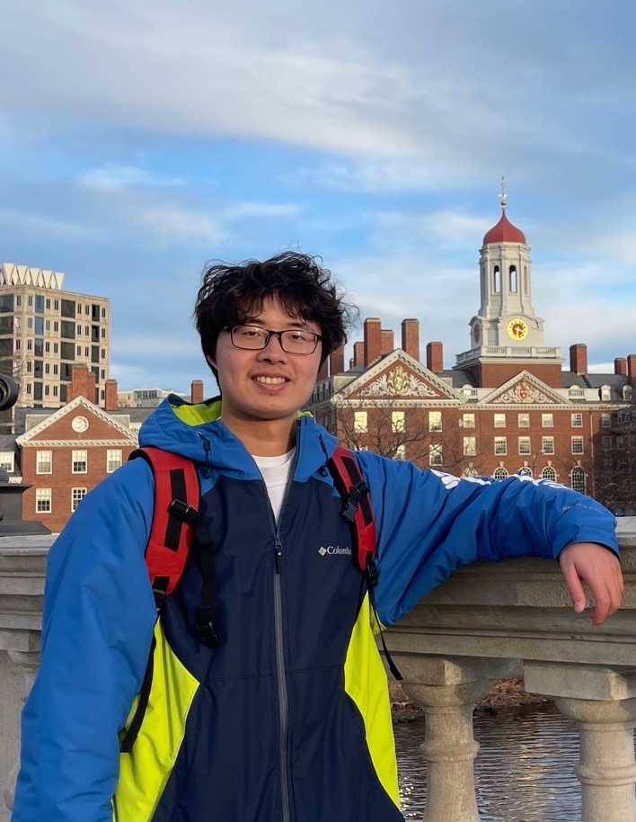

|

|
Yanqi Gu
Department of Computer Science
University of California, Irvine
Email: yanqig1 [at] uci [dot] edu
Office: Donald Bren Hall #4039
|
About Me
I'm a final-year PhD student at
University of California, Irvine, advised by
Prof. Stanislaw Jarecki. I'm a memeber of the Crypto Lab. During summer 2023 I visited
University of California, Berkeley, hosted by
Prof. Sanjam Garg.
I have a broad interest on both theoretical and practical aspects of cryptography.
Research
(authors are ordered alphabetically in cryptography)
Threshold Password Authenticated Key Exchange
Manuscript, title anonymized
|
A Generic Construction of lattice-based Asymmetric PAKE
Manuscript, title anonymized
|
Randomized Half-Ideal Cipher on Groups with applications to UC (a)PAKE
Bruno Freitas Dos Santos, Yanqi Gu and Stanislaw Jarecki
EUROCRYPT 2023
[paper]
|
Asymmetric PAKE with low computation and communication
Bruno Freitas Dos Santos, Yanqi Gu, Stanislaw Jarecki and Hugo Krawczyk
EUROCRYPT 2022
[paper]
|
KHAPE: Asymmetric PAKE from Key-Hiding Key Exchange
Yanqi Gu, Stanislaw Jarecki and Hugo Krawczyk
CRYPTO 2021
[paper][eprint]
|
GPU-acceleration on a low-latency binary-coalescence gravitational wave search pipeline
Xiangyu Guo, Qi Chu, Shin Kee Chung, Zhihui Du, Linqing Wen, Yanqi Gu
Computer Physics Communications 2018
[PDF]
|
Experience
Summer 2022: Intern at Private AI at Intel.
Summer 2021: Intern at Security Lab at JD.com.
Summer 2020: Intern at Security Research team at Microsoft.
Summer 2019: Intern at Intertrust, working on Fully Homomorphic Encryption.
Teaching
TA for ICS 6D - Introduction to Discrete Mathematics, UC Irvine, Winter 24, Fall 23, Winter 23, Winter 19
TA for CS 175 - Projects in AI(Adversarial ML), UC Irvine, Spring 22
TA for CS 268P - Introduction to Optimization, UC Irvine, Fall 21
TA for CS 175 - Projects in AI, UC Irvine, Winter 21
TA for CS 169/268 - Introduction to Optimization, UC Irvine, Fall 19
Misc.
I'm maintaining Awesome-Privacy on Github. You are more than welcome to contribute and share :)
Last updated on Feb 2024.